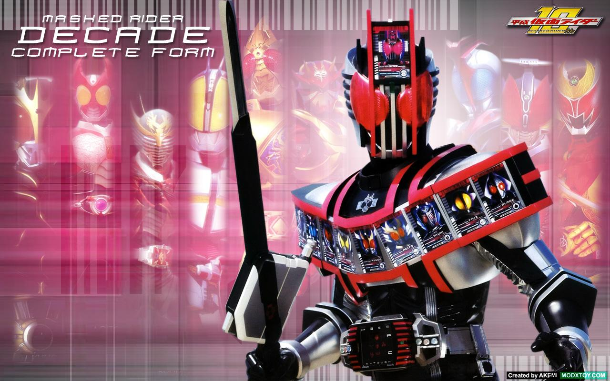

假面骑士Decade
剧情简介:
「平成骑士？10年还早呢！」
突然开始崩溃的世界。在袭击人们的无数的怪物的面前，丧失记忆的青年·门矢士变身为假面骑士Decade。他所被赋予的使命，就是将世界从消灭中拯救出来……。与别世界的假面骑士们的相遇。然后战斗。巡游9个平行世界的Decade之旅，现在开始。。
剧情简介:
本作中的大多数世界并不是对应原作品的世界，而是其平行世界，因此世界观、人物关系、骑士设定跟剧情发展方向会与相应原作有所不同。
大部分骑士均有变身者不同、可变形态不同、姓名不同（但取自原变身者）、以及世界观不同的区别，以下世界根据出场顺序排列而成。
角色介绍:
飞电或人
高桥文哉、中野遥斗（幼年期）饰
假面骑士Zero-One、 假面骑士Zero-Two、假面骑士Ark-One以及假面骑士001的变身者。
22岁。原来是搞笑艺人。某日突然因祖父飞电是之助的遗言被任命为飞电智能的第二代社长，使用“飞电Zero-One驱动器”变身为假面骑士Zero-One与因“灭亡迅雷.net”而暴走的人机偶战斗。
宗像草太
配音：松村北斗(日语)、马正阳(大陆普通话)、庄汶锜(台湾普通话)
负责关闭会带来“灾难”的门的“闭门师”，为寻找出现在日本各地的门而旅行的青年。在前往有门的废墟的途中遇到了铃芽。后来变成了铃芽小时候用过的儿童椅样行动。